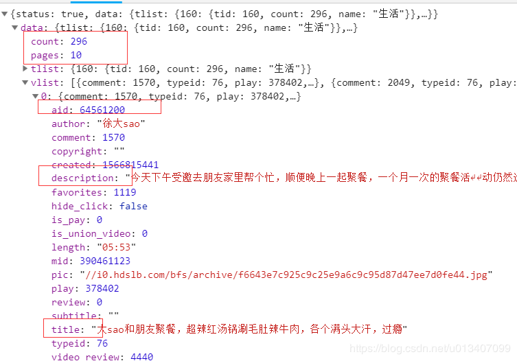
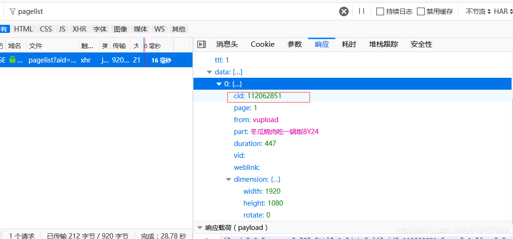
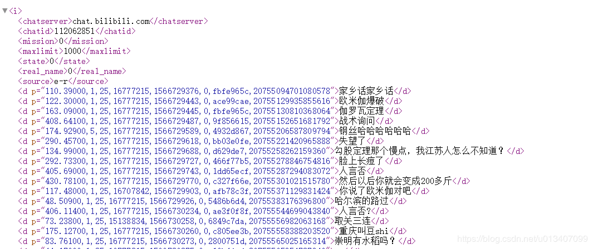
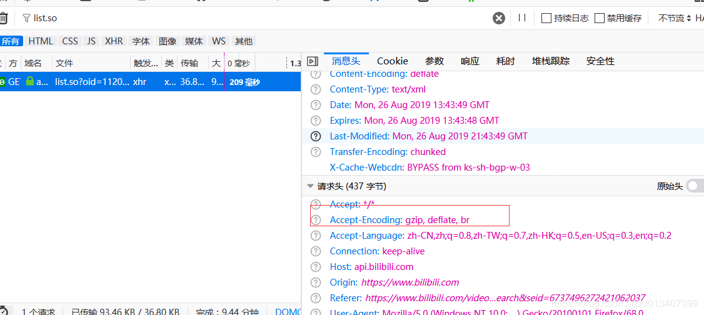

原文连接:https://www.cnblogs.com/yanpeng19940119/p/11415457.html
最近受人之托研究了下b站的数据爬取做个小工具，最后朋友说不需要了，本着开源共享的原则，将研究成果与大家分享一波，话不多说直接上干货
需求分析
给定up主uid和用户uid，爬取用户在该up主所有视频中发的所有弹幕
需求拆解
获取up主所有视频
打开b站，随便搜索一个up主，打开所有视频页面，f12看异步请求就一目了然了
直接通过GET请求访问，该接口限制pagesize为100，数目超过就会返回错误，但是该接口会返回一个总数与页数，所以我们首先请求一次，获取相关参数再分批次请求，获取到数据后对vlist进行json数据解析就可以，我们主要获取的是aid，也就是av号

获取视频所有弹幕
使用firefox浏览器打开视频，f12后搜索list.so请求会发现弹幕xml文件，同样也是GET请求
接口地址:https://api.bilibili.com/x/v1/dm/list.so?oid=112062851 http://comment.bilibili.com/{cid}..xml
但是在百度的过程中发现了一个直接读取xml文件的地址，更加方便
接口地址：http://comment.bilibili.com/{cid}.xml
这个cid就是弹幕xml的文件编号，通过分析异步请求，发现了返回这个cid的返回接口
接口地址：https://api.bilibili.com/x/player/pagelist?aid=视频av号&jsonp=jsonp

需要注意的是返回的是一个数组，这说明如果视频弹幕过多的话可能有多个xml文件，我们需要遍历获取
弹幕xml文件分析
文件格式内容如下所示

可以看到里面d标签的文字内容就是发送的弹幕，但是我们还需要对弹幕的发送者与我们给定的用户进行对比，所以需要对d标签的属性p进行分析，p属性使用逗号隔开的一系列数据，其中各个参数属性如下
<d p=”弹幕出现时间,模式,字体大小,颜色,发送时间戳,弹幕池,用户Hash,数据库ID”>123123</d>
我们只需要获取里面的第7个参数用户的唯一标识即可
难点分析
用户id转换
在弹幕xml文件中获取的用户标识是用户uid经过hash后的编码，所以我们需要进行转换后才能对比校验，经过使用在线hash网站中的一个个hash函数尝试比对，发现hash算法为crc32b，crc32是一个常见算法，用于文件校验，但是crc32b百度了一圈也搜索不到是个啥东西，无奈出国google了一下，crc32b只是将crc32算法加密后的结果转换成了16进制，下面提供c#实现的功能函数
通过代码GET请求保存xml文件
在保存xml文件的过程中发现输出流转为文字永远是乱码，经过查看请求网页中header中的值，发现返回的xml数据流是压缩格式的

所以我们对GET请求的方法进行了一些设置，首先Accept-Encoding需要与真正的访问请求保持一致，然后设置自动解压，下面提供c#示例
功能到这里就全部分析完毕了，最后打个广告，自己写的ASP.NET MVC快速开发框架，希望支持一波